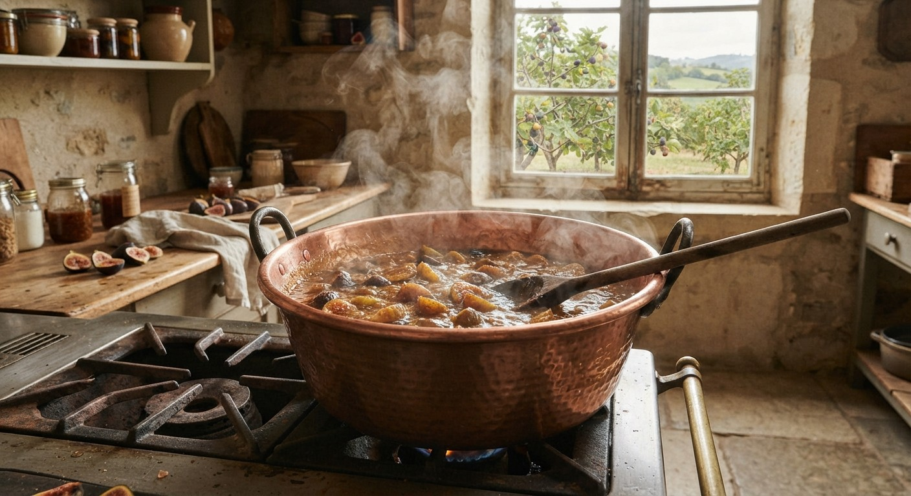

Qui fait quoi
Tout ce qui entre dans un coffret vient de l’un de ces six ateliers. Je vais les voir, je goûte, je repars avec des cartons. Voici leurs horaires, si vous voulez passer leur acheter directement.
| Producteur | Catégorie | Horaires | Produit signature | Dans les coffrets |
|---|---|---|---|---|
| Le Verger des Aulnes | Confitures | mar. au sam., 9 h – 12 h 30 | Confiture figue-noix | Petit Déjeuner, Goûter, Anniversaire |
| La Noisetterie Viguier | Pâtes à tartiner | sam., 8 h – 13 h (marché) | Pâte noisette à 60 % | Petit Déjeuner, Goûter, Anniversaire |
| Biscuiterie Marteau | Biscuits | lun. au ven., 7 h 30 – 18 h | Sablé au beurre salé | Petit Déjeuner, Goûter, Anniversaire |
| Moulin de la Brèche | Huiles et vinaigres | mer. et sam., 10 h – 18 h | Huile de noix pressée à froid | Déjeuner |
| Ferme Chaumette bio | Plats cuisinés, tartinades de légumes | ven., 14 h – 19 h (vente à la ferme) | Lentilles vertes mijotées | Petit Déjeuner, Déjeuner |
| Comptoir Kerbrat | Thés et épices | lun. au sam., 10 h – 19 h | Mélange « Cinq baies » | Petit Déjeuner, Déjeuner, Goûter, Anniversaire |

3 kg
de fruits par chaudron, pas un de plus
Au Verger des Aulnes, les confitures cuisent en petites quantités dans des chaudrons en cuivre. C’est plus long, mais le fruit garde sa texture : on reconnaît les morceaux de figue sous la cuillère.
C’est ce genre de détail qui décide si un produit entre dans un coffret. Retrouvez la confiture figue-noix dans le Coffret Anniversaire.